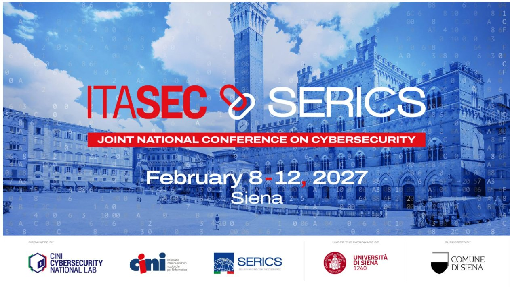

COSMI
In an upper-tier Seveso establishment, an attack on the basic process control system or on the safety instrumented system does not stay in the digital domain. It reaches the physical process, and it can end in loss of containment, fire, explosion, damaged equipment and injured people.
From the control room, that attack is not observable as an attack. It appears as a deviation in process variables, at first indistinguishable from a fault or a drift, to be diagnosed under time pressure and on instrumentation that may itself be compromised. The operator is often the last barrier once the automated protections have been reached, and is rarely fully part of either the safety picture or the security one.
Collaborative intelligence systems act in two opposite directions. They extend the capacity to detect, and they enlarge the attack surface. By moving part of the decision away from the operator they also change what can be reconstructed after the event — and the attribution of responsibility depends on that reconstruction.
COSMI brings together process and machine safety, reliability and human factors on one side, and industrial cybersecurity on the other, with the inspection authority in the room. It is a half-day of invited talks and a closing panel: there is no call for papers and no proceedings volume.
| Duration | Who | Session |
|---|---|---|
| 10′ | The chairs | Opening |
| 15′ | Romualdo Marrazzo ISPRA |
Framing talk Regulatory duties, and what an operator must be able to demonstrate |
| 40′ | Politecnico di Torino | Collaborative intelligence in the control room Two talks of 20 minutes |
| 40′ | Università di Bologna | Cyber-physical security risk assessment in process and energy facilities Two talks of 20 minutes |
| 20′ | Coffee break | |
| 40′ | Università Campus Bio-Medico di Roma | Emergent risks in industrial cyber-physical systems Tomaso Vairo Cyber-physical attacks on industrial infrastructures Simone Guarino |
| 30′ | Cozzani, Setola, Marrazzo | Closing panel What a collaborative intelligence system has to demonstrate before it is allowed into the control room of a major-hazard plant |
Chairs
Micaela DemichelaPolitecnico di Torino, DISAT
Valerio CozzaniUniversità di Bologna
Roberto SetolaUniversità Campus Bio-Medico di Roma
Technical programme committee
COSMI is part of ITASEC 2027 and is open to everyone registered for the conference.
Santa Maria della Scala, Siena, on Monday 8 February 2027. The starting time within the day is set by the conference programme.
The speakers’ slides are published on this page.